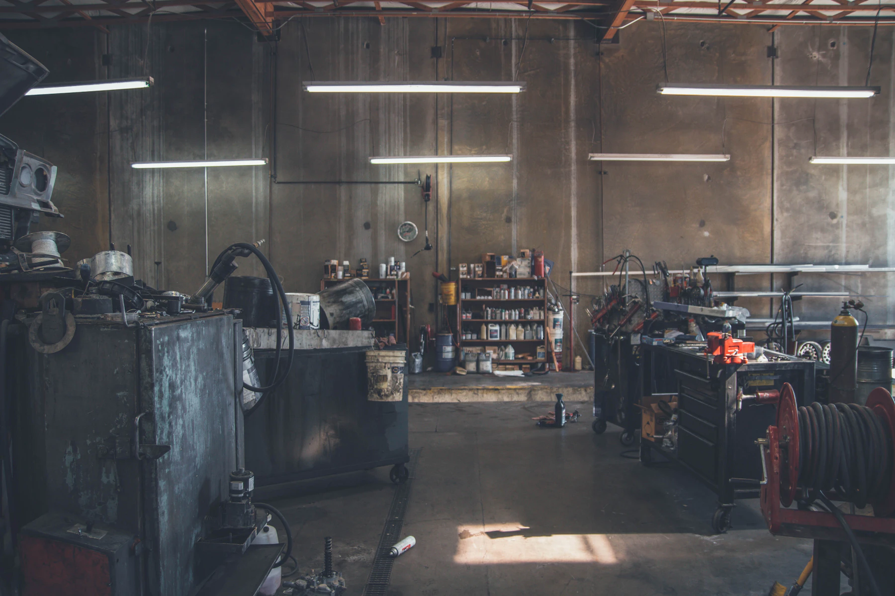
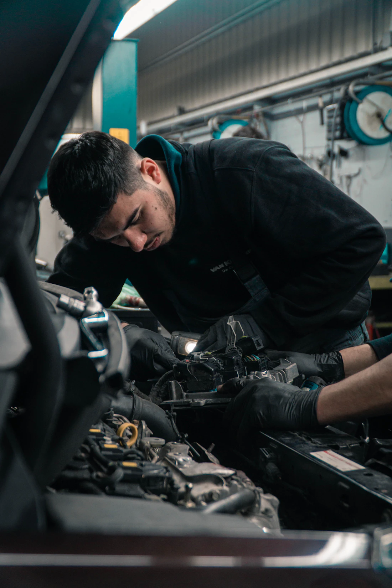
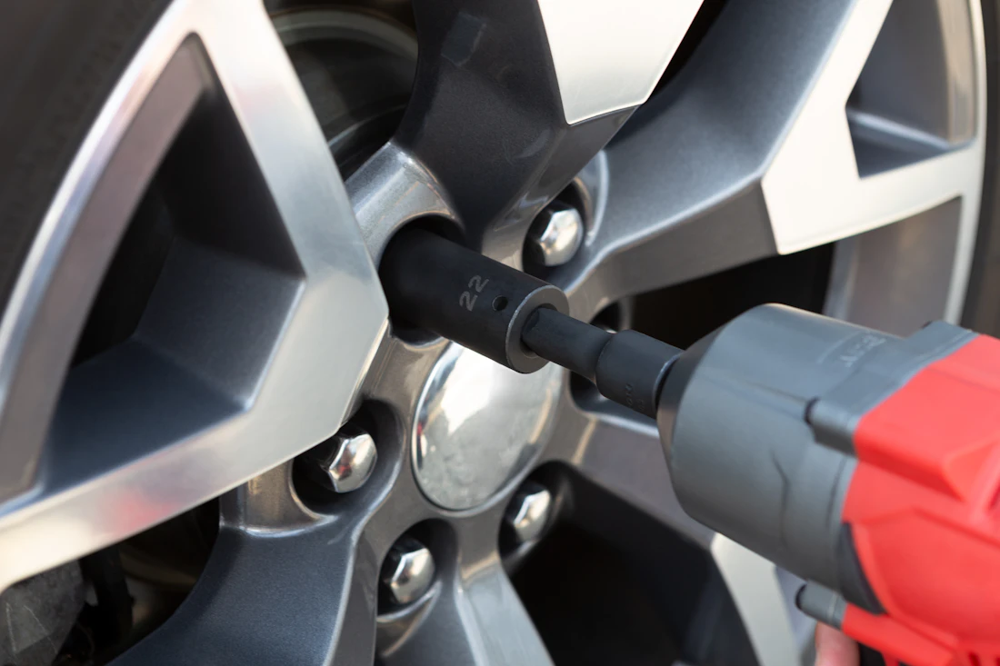

Стучит,
греется,
не едет?
Автомастерская «Ось» на адрес уточняется. Приезжайте — поднимем, найдём причину и назовём цену до начала работы.
Ежедневно часы работы уточняются Без записи или по звонку Старые детали отдаём
Что делаем
Приезжайте с тем, что слышите и видите, — название работы подберём сами.
Цену на конкретную работу называем после осмотра. Чего нет в списке — спросите, скажем честно, беремся или нет.
Как это происходит
Пять остановок от ворот до ворот. Дальше третьей без вашего «да» не едем.
-
0КМ
Приезжайте
Без записи или по звонку — как удобнее. Расскажите, что слышите и когда это началось.
-
1КМ
Смотрим
Поднимаем на подъёмник, проверяем и находим причину, а не ближайший подозрительный узел.
-
2КМ
Называем цену
До начала работы и целиком: детали и работа. Не начинаем, пока не согласуете.
-
3КМ
Чиним
Если по дороге всплывает что-то ещё — звоним и спрашиваем, а не дописываем в счёт.
-
4КМ
Забираете
Показываем снятое, отдаём старые детали и говорим, за чем следить дальше.
Мастерская
Заходите в цех и смотрите, что с вашей машиной. Мы не прячем работу за дверью.

Наш цех
Люди, а не приёмщик
Колёса — тоже к намПока здесь стоковые снимки. Замените их фотографиями своего цеха — именно по ним человек решает, ехать к вам или нет.
Приехать
Конец маршрута. Загляните в часы работы и выезжайте.
ул. улица уточняется, дом уточняется
- Город
- уточняется
- Ориентир
- уточняется
- Заезд
- уточняется
Часы работы
- Понедельник — пятница
- Суббота
- Воскресенье
Если едете к концу дня — позвоните, скажем, успеем сегодня или лучше завтра с утра.